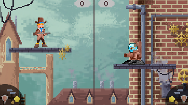

<!DOCTYPE html>
<html lang="en" xmlns="https://www.w3.org/1999/xhtml">

</html>

<head>
    <meta charset="utf-8" />
    <title>Portfolio LB</title>
    <link rel="stylesheet" href="style.css">

    <link href="https://cdn.jsdelivr.net/npm/bootstrap@5.1.3/dist/css/bootstrap.min.css" rel="stylesheet"
        integrity="sha384-1BmE4kWBq78iYhFldvKuhfTAU6auU8tT94WrHftjDbrCEXSU1oBoqyl2QvZ6jIW3" crossorigin="anonymous">
    <script src="https://cdn.jsdelivr.net/npm/bootstrap@5.1.3/dist/js/bootstrap.bundle.min.js"
        integrity="sha384-ka7Sk0Gln4gmtz2MlQnikT1wXgYsOg+OMhuP+IlRH9sENBO0LRn5q+8nbTov4+1p"
        crossorigin="anonymous"></script>
</head>

<body>
    <ul class="topnav stickTop">
        <li><a href="index.html">Home</a></li>
        <li><a href="work.html">Projects</a></li>
        <li style="float:right"><a href="pongdutch.html">NL</a></li>
        <li style="float:right"><a href="pong.html">ENG</a></li>
    </ul>

    <div class="hero-image">
        <div class="hero-text">
            <h1> Project SteamPong </h1>
        </div>
    </div>

    <div class="container">
        <div class="row">
            <div class="col projects-left">
                <div class="card-header" style="background-color:#7b8379;">Explanation</div>
                <div class="card-body">This was the first project that I have made in a team.
                    The main purpose of this project was to create an Arcade game,
                    while working in a team.
                    This was also the first time we worked with the system "SCRUM"</div>
                <div class="card-footer" style="background-color: #7b8379"></div>
            </div>
            <div class="col">
                
            </div>
        </div>
        <div class="row">
            <div class="col projects-left">
                <div class="card-header" style="background-color:#7b8379;">Learning Goals</div>
                <div class="card-body">
                    - Working in a team <br>
                    - Discussing what possibilities are open given the time and skills <br>
                    - Giving and gaining feedback <br>
                    - Planning <br>
                    - Communication <br>
                    - Improved my skills with C# <br>
                    - Worked with UNITY <br>
                </div>
                <div class="card-footer" style="background-color: #7b8379"></div>
            </div>
            <div class="col">
                
            </div>
        </div> 
        <div class="row">
            <div class="col projects-left">
                <div class="card-header" style="background-color:#7b8379;">Conclusion</div>
                <div class="card-body">This project was quite a challenge for me. 
                Because I was not used to working in a team.
                Especially a team of three artists and one developer.
                That was quite a challenge itself because I also had
                to explain what was possible and what wasn't.
                Looking at the time and my experience with C# aswell.</div>
                <div class="card-footer" style="background-color: #7b8379"></div>
            </div>
            <div class="col">
                <!--  -->
            </div>
        </div>
    </div>
</body>

</html>